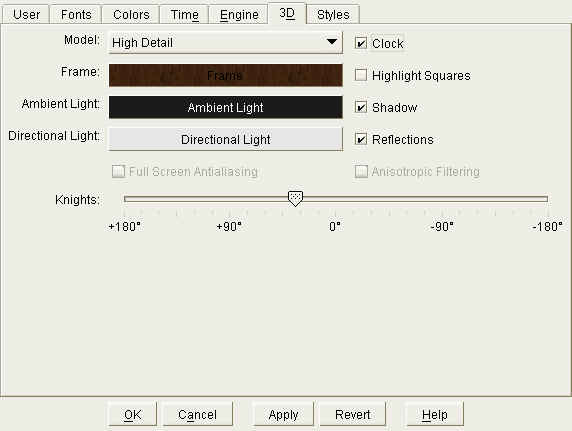

|
|
jose 1.4.1 |
|

Configure the appearance of the 3D board.
Choose the design for the 3D pieces:
Show the clock.
Highlight squares when pieces move over.
Display the shadow of pieces.
Display the reflection of pieces on the board. This option requires additional resources from your graphics hardware. If you have an older graphics card, or if you have selected the "High Detail" design, you should probably not enabled reflections.
Select the color or texture for the board frame ( Color Chooser ).
Select color and brightness of ambient (non-directional) lighting. It is recommended to use little ambient light.
Select color and brightness of directional lighting.
Enable Full-Screen-Antialiasing, which creates a better looking image on screen. However, it requires additional resources from your graphics hardware. Also, this setting might not work with all graphics cards. With some cards, FSAA can be enabled in the Windows Display control panel.
Enable Anisotopic Filtering, which creates a better looking image on screen. However, it requires additional resources from your graphics hardware. Also, this setting might not work with all graphics cards. With some cards, Anisotropic Filtering can be enabled in the Windows Display control panel.
The direction where the knights' heads are facing. Use the slider to rotate the knights.
|
|
© 2002-2006 jose-chess.sourceforge.net |
|